Guide d'installation

Git
Sur Windows
Accèder à la page de téléchargement pour Windows de Git : git-scm.com/download/win
Puis cliquer sur Click here to download
Lorsque le téléchargement est terminé vous devriez avoir un fichier
type Git-2.35.1.2-64-bit.exe dans le dossier de
Téléchargement de votre ordinateur.
Lancer l'éxecutable.
Vous devriez obtenir une fenêtre comme celle-ci :
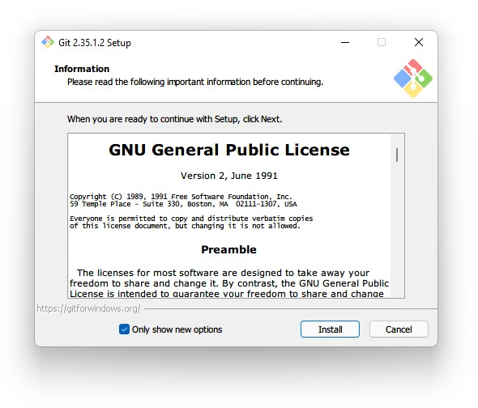Cliquer sur Install, la fenêtre suivante :
Laisser coché les options par défaut. Puis cliquer sur next
Visual Studio Code ici, mais si vous avez l'habitude d'utiliser un autre éditeur de code n'hésitez pas à le choisir à la placePareil qu'avant, laisser coché l'option par défaut pour les trois prochaines fenêtres :
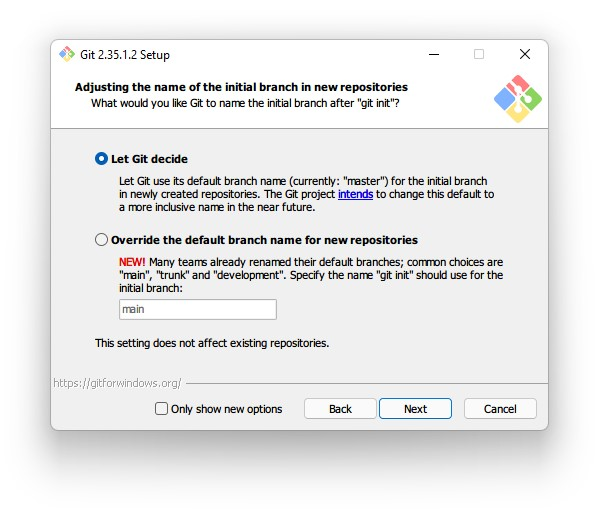 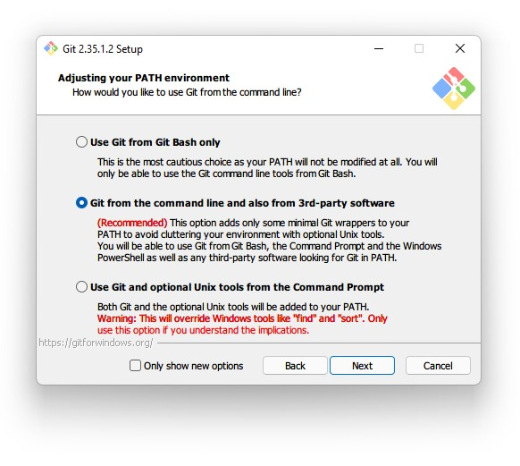 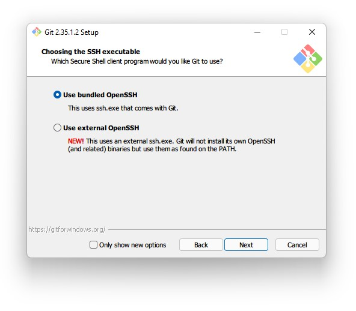Je recommande de choisir la seconde option ici puisqu'elle offre une meilleure intégration aux outils Windows :
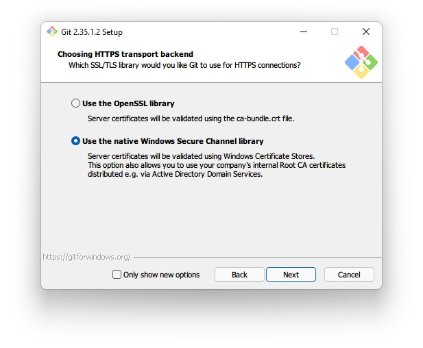Laisser coché l'option par défaut et accèder à la fenêtre d'après :
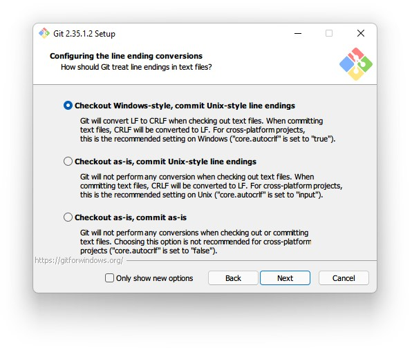Choisir la seconde option :
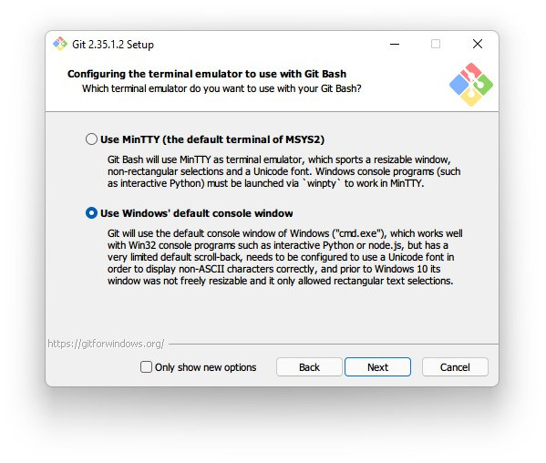Laisser coché les choix par défaut pour les quatres prochaines fenêtres :
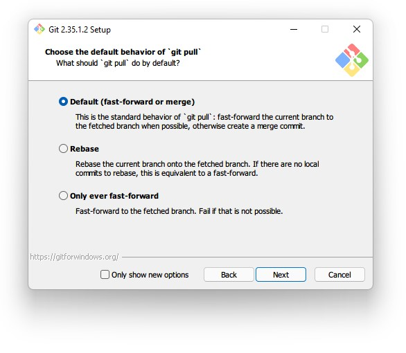 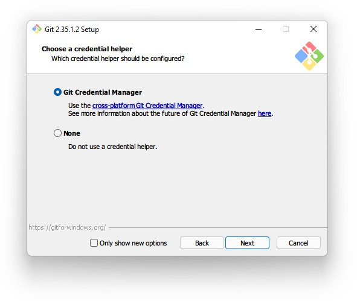 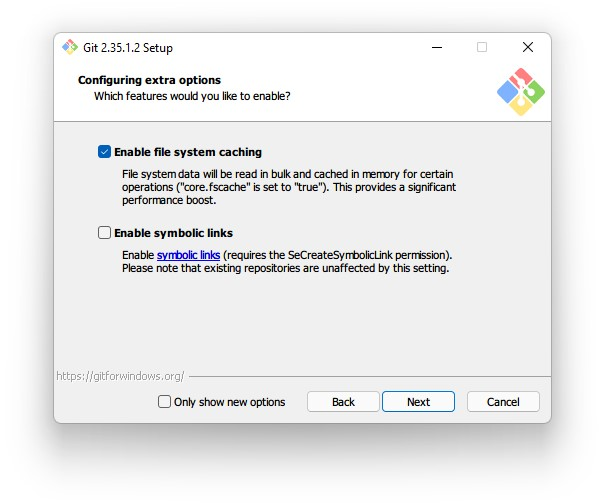 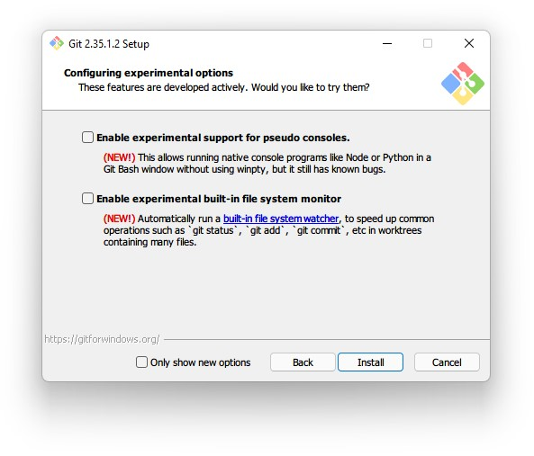Sur macOS
Accèder à la page de téléchargement pour macOS de Git : git-scm.com/download/mac
Puis cliquer sur Click here to download
Configuration de Git
Avant d'utiliser Git il est recommandé de définir le nom sous lequel vos modifications seront connues et le mail associé (le même mail que celui qui a servi à la création de votre compte GitHub fera très bien l'affaire).
Pour cela, il faut ouvrir un terminal de commandes (Invite de commandes sur Windows 10, Windows Terminal sur Windows 11 et Terminal sur macOS) :
Et lancer les commandes suivantes (en prenant soins de changer les valeurs) :
git config --global user.name "your_github_username"
git config --global user.email "your_email@github.com"
Visual Studio Code
Qu'elle que soit la plateforme l'installation de Visual Studio Code est relativement simple, il suffit de se rendre sur le site de téléchargement officiel et de cliquer sur le bouton de téléchargement :
GitHub Desktop
GitHub Desktop est une interface graphique pour Git, il permet de simplifier grandement l'utilisation de Git sur ordinateur et propose une intégration avancée de GitHub (clonage, création de dépôts, etc.)
D'autres interface graphique pour Git existe, nottamment GitKraken ou encore Tower Git (Que je recommande grandement si vous souhaitez utiliser Git à son plein potentiel), mais GitHub Desktop présente tout de même l'avantage d'être très facilement accessible pour les nouveaux utilisateurs de Git et s'intégre très bien si vous utilisez GitHub
Vous pouvez le télécharger depuis le site officiel : desktop.github.com :